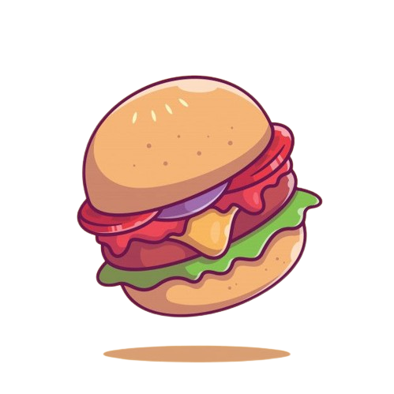

Tips de Recetas
Consejos & Dificultad
Para unos espaguetis deliciosos hierve la pasta, prepara una salsa de tomate fresca con ajo, tomates triturados y hierbas. Sirve la pasta con queso parmesano, un toque de aceite de oliva y hierbas frescas. ¡Listo para disfrutar de un plato auténtico y delicioso!

Espaguetti
Dificultad
Mezcla una 1 taza de harina, 2 de polvo de hornear, 2 de azúcar. En otro recipiente, bate un huevo y agrégale leche y 2 de mantequilla. Combina los ingredientes hasta obtener una masa homogénea. Calienta una sartén y unta con un poco de mantequilla . Vierte en el sartén caliente y cocina hasta que estén dorados. Sirve con tu sirope o frutas favoritas.

Pancake
Dificultad
Para una hamburguesa deliciosa, Cocina a fuego medio-alto, volteándolas agregando queso hacia el final para que se derrita. Tuesta ligeramente los panes de hamburguesa y unta con salsas. Completa con lechuga, tomate y cebolla para un resultado jugoso y lleno de sabor.

Hamburguesa
Dificultad
Sándwich BLT(bacon/lechuga/tomate), frie tocino hasta que estén crujientes. , tuesta ligeramente el pan. Lava y corta tomates en rodajas finas. . Ahora armar el sándwich: unta mayonesa en el pan tostado, luego coloca las hojas de lechuga seguidas de las rodajas de tomate. Añade generosamente el tocino crujiente. Cierra el sándwich con otra rebanada de pan.
Sándwich BLT
Dificultad
Mezcla harina, levadura en polvo, azúcar en un tazón. Bate huevos y agrega leche y mantequilla derretida. Combina ambas mezclas hasta obtener una masa homogénea. Precalienta la gofrera y vierte la masa, cocinando hasta que estén dorados. Sirve con frutas, sirope de arce y un toque de crema batida.
Gofre Redondo
Dificultad
Para preparar un croffle, una combinación deliciosa entre un croissant y un waffle, necesitarás una plancha para waffles y masa de croissants refrigerada. Abre la masa de croissants y coloca un triángulo en cada sección de la plancha caliente. Cierra la tapa y cocina hasta que el croissant esté dorado. Puedes servirlo tal cual o añadir tus ingredientes favoritos, como frutas frescas, jarabe de arce o crema batida.